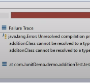
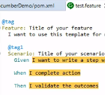
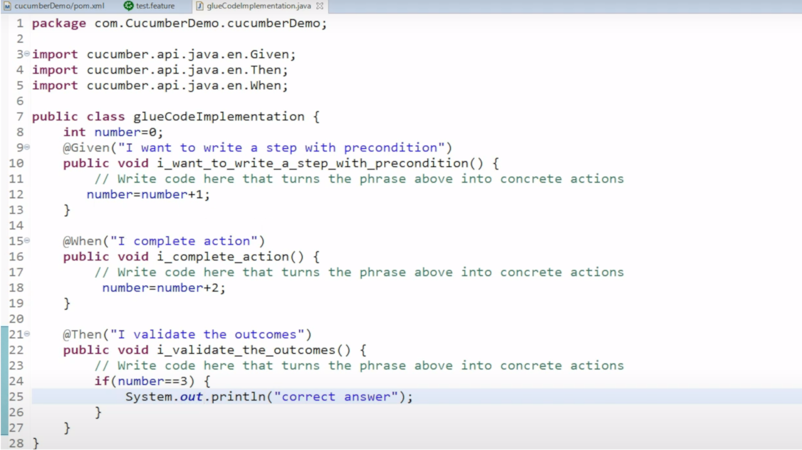

Experimental Learning in Comp 4004
About The Project
For my honours project I completed an in-depth set of guides and excercises regarding automated software testing and software quality assurance. The goal of this project was to create a set of additional learning resources to assist students in a fourth year software quality assurance and testing course. Below I'll list the topics that were covered during the course of this project, for each topic I had to research and explain the use cases and develop a scenario which highlights the potential for each tool.
JUnit (Unit Testing)
 Unit testing is used to ensure that a section of the code is performing as intended. JUnit is a tool for Java which allows developers to create test cases in order to perform unit testing on their programs. In this section of the project I demonstrated how to write approriate test cases and how to write correct JUnit annotations in order to execute unit testing. In addition I demonstrated how to create test suites in order to run a collection of test cases. This is helpful if you have mulitple behaviours to test with sets of test cases. Learning how to write proper test cases and understanding the business logic of an application are all proper tools required to accurately create unit tests to verify a system.
Log4j (Logging)
Log4j is a logging API from Apache. This logging tool allows Java applications to record logs during execution. By calling Log4j methods the user is able to document a variety of different log levels and store them in a designated document for retrieval. By creating a log.properties file, the developer can modify the information that is written to the log as well as modify the formatting of log file. This allows the developer to parse out information which may not be required for a sepcific test. This tool is extremely helpful in situations where the system that is being used does not necessarily have a debugger. As the log statements are written in line with the rest of the code, it is easy to identify any faults that may occur during the testing period as it is easy to read the log file and trace the path of the log messages. The objective of this excercise was to deliver a proper explanation on why and how a logging tool can be implemented into a project in order to record proper log messages.
Selenium (Automated Black-Box Web Testing)
Selenium is a tool which allows for the automation of web browsers, with this tool it is possible for the tester to imitate human interaction with web elements. It may do this by performing actions similar to a human such as inputting text into a field and clicking on various web elements. This process can be useful in finding potential faults in a web application. As Selenium follows the instructions that the tester has written, it is possible to re-create use cases and perform black-box testing. Through this excercise I cover how Selenium can be used as a black-box testing automation tool and cover potential problems that may occur in web applications.
Cucumber (Behaviour-Driven Development)
 Cucumber is a tool which promotes Behaviour-Driven Development (BDD). Behaviour Driven Development is a process which encourages communication between different groups of a project (technical,business,etc). With the increased communication between different groups, it may lead to less vague requirements from the client so the developers can deliver a more accurate product. The increased collaboration between different groups of a project may also reduce the ambiguity of the project; if all parties involved with the project understand the goal and create examples together, they will all be working towards completing the same tasks. In regards to Cucumber examples are written in a .feature file, examples are stories with rules: the rules are followed, and a result is obtained at the end. It is important to note that these examples are written in plain language so everyone on the team can understand the scenario without needing a technical background. The examples created by collaboration can also allow different groups to discover the faults that can occur in the system. With the examples produced they can then be created into automated tests with Cucumber. In this portion of the project I cover the importance of BDD and demonstrate how to write Cucumber feature files. To execute tests along with the feature files, associated code for testing needs to be 'glued' along with the example. Below you can see the glue code for the a feature example above, because the glue code is written in code unit tests can be run during scenarios.
Testing Multithreaded Systems
In this section of the project I discussed and highlighted issues regarding testing multithreaded systems. Threads are independent paths of execution found in a program. In Java, threads are scheduled randomly. If tasked with testing a concurrent system, it will be difficult to accurately document and test the system as there is no predetermined execution for the Java threads. Even if a tester managed to write test cases to cover each permutation of thread executions, it would not be feasible to execute the test cases. Due to the random execution of threads, the tester cannot force one thread to run before another. This causes a problem because test cases will not be consistent. In some cases the threads may run in the correct order passing a test case; the next time the same test is run the results may differ due to when the threads execute.